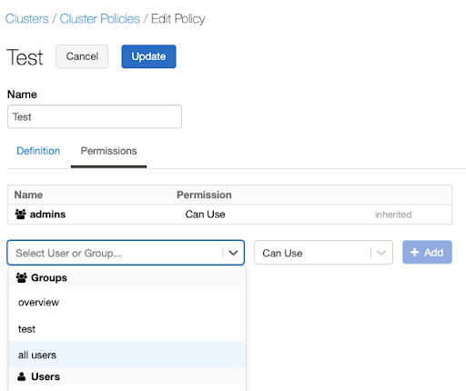
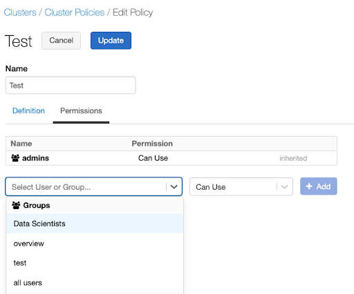
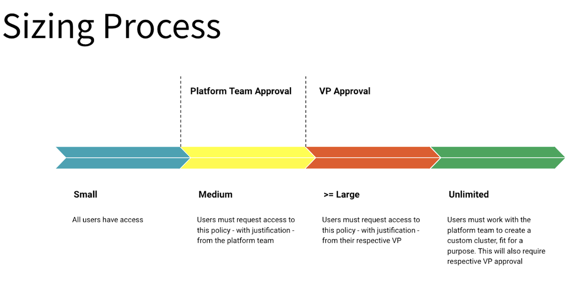

Best practices: Compute policies
Warning
This article has been archived and may no longer reflect the current state of the product. For information about compute policies, see Create and manage compute policies.
Databricks compute policies provide administrators control over the creation of compute resources in a Databricks workspace. Effective use of compute policies allows administrators to:
Enforce standardized compute configurations.
Prevent excessive use of resources and control spending.
Ensure accurate chargeback by correctly tagging compute resources.
Facilitate analysis and processing by providing users with pre-configured compute configurations targeted at specific workloads.
Combined with effective onboarding, approval, and chargeback processes, compute policies can be a foundational component in Databricks platform governance. This guide presents recommendations and best practices to help you create a successful plan for integrating compute policies into your governance framework.
Since governance is unique to each organization’s requirements and existing governance infrastructure, this article begins by covering recommendations that apply commonly to compute policies. The last section of this article discusses specific strategies to address challenges you might see in your environment.
This article discusses the following best practices and recommendations to ensure a successful compute governance rollout:
Create a plan for introducing compute policies in phases to help users transition to a governed environment.
Create a plan for communicating changes for each phase of the compute policies rollout.
Identify compute governance challenges and implement strategies to address those challenges.
Compute policies rollout
Implementing compute policies can present a significant change to the user experience. Databricks recommends a phased approach to help guide users through the transition:
Communicate the upcoming changes and provide users an opportunity to test compute configurations.
Perform a soft rollout.
Incrementally introduce further policy changes.
Perform a hard cutover to an entirely governed environment.
A phased rollout allows users to familiarize themselves with the new policies and prevent disruption to existing workloads. The following diagram is an example of this recommended process:
The following sections provide more detailed information on these stages:
Communicate and test compute policies
Begin the process by communicating the upcoming changes to users. The communication plan should include:
Details on changes that are coming.
Why these changes are happening.
What users will need to do to ensure successful transitioning of workloads.
How to provide feedback about the changes.
A timeline for each stage of the rollout.
At the start of each stage of the phased rollout, communicate further details relevant to that stage.
The following diagram provides an example communication plan for a phased rollout:
Your plan might have different stages depending on your environment and compute policies strategy. This example includes four stages:
Stage 1 includes communicating the plan to users and beginning of testing. Users must have an opportunity to test their current and anticipated workloads on compute that conform to the new policies. You want to identify any issues with existing and planned workloads early in the process.
Stage 2 continues testing along with the rollout of a compute tagging policy.
Stage 3 introduces compute types, in this case specifying compute using T-shirt sizes, for example, small, large, or extra-large compute types.
Stage 4 is the final rollout of compute policies along with complete user documentation.
Users should also have the opportunity to test their workloads with the planned compute configurations in the initial stage. This testing can help identify existing workloads that have issues running with the proposed policies.
Considerations for introducing compute policies
Consider your current management policies when planning the initial deployment of compute policies. In particular, consider whether you’re moving from an environment where users are restricted from creating compute or a more open environment.
Restrictive environment
In the case of an environment where users haven’t had permissions to create compute, begin by rolling out restrictive policies along with an enablement plan for users. An enablement plan might be computer-based training, workshops, or documentation. Providing users with guidance on best practices for configuring compute will improve their ability to take full advantage of the platform. Policies can be relaxed as users demonstrate compliance and competence with the platform.
Unrestricted environment
Applying policies can be more challenging in an unrestricted environment. Some existing use cases and compute will nearly always fall outside of the new policy’s constraints, so identifying these in a testing or soft rollout stage is crucial.
Users with compute create permissions or access to the unrestricted policy will maintain their access to this policy throughout the soft rollout to ensure all workloads continue to function. Users should use the soft rollout to test all of their workloads with the new policies that will be made available to them.
Be sure to give users a place to submit feedback about the policies. Work with users to refine the policies or define new policies when issues arise.
Final rollout
Remove access to the unrestricted policies for restricted users when the deadline is reached. The rollout of compute policies should now be complete.
Specific challenges & strategies
The following are examples of applying compute policies to address specific challenges. Many of these strategies can be employed simultaneously but will require application of each strategy across all policies. For example, if using the tag enforcement strategy with the T-shirt size strategy, each T-shirt policy will also need a custom_tag.* policy.
Tag enforcement
Challenge
Users can create compute freely, and there is no mechanism to enforce that they apply required tags.
Solution
Revoke compute create permission from users.
Add a compute tag rule to any applicable compute policies. To add the compute tag rule to a policy, use the
custom_tags.<tag-name>attribute. The value can be anything under an unlimited policy, or it can be restricted by fixed, allow list, block list, regex, or range policies. For example, to ensure correct chargeback and cost attribution, enforce aCOST_CENTERtag on each policy restricted to a list of allowed cost center values:{"custom_tags.COST_CENTER": {"type":"allowlist", "values":["9999", "9921", "9531" ]}}
Any user using this policy will have to fill in a
COST_CENTERtag with 9999, 9921, or 9531 for the compute to launch.Assign the policy to users who should be able to charge against those three cost centers. Policies can be assigned at a user or group level through the compute policy UI or the Policies API. The following example request body assigns a policy to the sales department:
{ "access_control_list": [ { "user_name": "user@mydomain.com", "all_permissions": [ { "permission_level": "CAN_USE" } ] }, { "group_name": "sales", "all_permissions": [ { "permission_level": "CAN_USE" } ] } ] }
Inexperienced users
Challenge
Users are unfamiliar with compute or cloud infrastructure provisioning or overwhelmed with compute creation options.
Solution
Use compute policies to define “T-shirt” sized compute configurations, for example, small, medium, or large compute .
Create a policy for each T-Shirt size. T-shirt size policies indicate a relative compute size to the users and can either be flexible templates or zero option configurations. Zero option or low option policies will often have fixed and hidden policy rules. The following example defines a policy with a fixed value of DBR 7.3 for the
spark_version. Setting thehiddenflag to true will ensure this option is not visible to users.{"spark_version": { "type": "fixed", "value": "auto:latest-ml", "hidden": true }}
When defining flexible templates, you can use range, blocklist, regex, and unlimited policy policies to set upper boundaries, non-optional fields, and semi-restricted policy elements. The following example defines a policy that enables autoscaling nodes to a maximum of 25. You can use this definition to set upper boundaries on each T-Shirt size while providing some flexibility. To see more details of a compute template approach, see Excessive resource usage.
{"autoscale.max_workers": { "type": "range", "maxValue": "25", "defaultValue": 5}}
Assign the policy to users who should be allowed to create T-shirt sized compute . Policies can be assigned at a user or a group level through the policy UI or the Policy Permissions API. For example, to assign this policy to all users through the UI:
Go to the policy and select Edit.
Select the Permissions tab.
Select the all users option under Groups in the dropdown.

Revoke access to the unrestricted policy from the groups that must use these new policies only. Once compute policies are in use, having access to the “compute creation” permission gives users access to the unrestricted policy. It’s important to revoke this permission for users that should not have it.
To revoke compute creation permissions, see Configure compute creation permission.
Use case specific policies
Challenge
Some workloads or analyses are incompatible with existing policies, or users do not know the correct compute configuration for certain workload types.
Solution
If you find workloads that don’t work well with existing policies, it’s often better to create new policies specifically targeted at those workloads instead of expanding existing policies.
To help users create compute using these policies, it can help to create policies tuned for specific use cases. Assign descriptive names to these policies to help users identify them. For example, if workloads will be querying a data source that supports predicate pushdown, a best practice is to build a specific policy that enforces autoscaling with a low or zero worker minimum. This policy will ensure that cloud provider and Databricks costs don’t unnecessarily grow while waiting for the data source to compute the pushed down components of the query.
Create a policy that enforces use case-specific best practices. This example defines a policy that has a fixed value of
0for the minimum number of workers. This policy also enforces that the compute will autoscale, satisfying the predicate pushdown example’s best practice.{"autoscale.min_workers": { "type": "fixed", "value": "0", "hidden": false }}
Assign the policy to users who need to build compute for these use cases. You can assign policies at a user or a group level through the policy UI or the Permissions API. For example, to assign this policy to a data scientist group through the UI:
Go to the policy and select Edit.
Select the Permissions tab.
To assign a policy to a specific team, select the team’s name in the Select User or Group dropdown.

Excessive resource usage
Challenge
Users are creating unnecessarily large compute, consuming excessive and expensive resources. This is often caused by:
Failure to activate autoscaling.
Incorrect usage of auto termination windows.
High minimum worker node counts.
Expensive instance types.
Solution
Pairing compute policies with an internal approval process will enable control over resources while also providing access to large compute resources when necessary.
Establish a review process for granting access to larger or more flexible policies. The review process should have an intake form that collects information that supports the need for larger or more flexible compute configurations. The platform ownership team should evaluate this information to decide how to support the workload requirements. The following diagram illustrates an example approval process using T-shirt sizing:
Create more flexible policies with fewer constraints and a focus on controlling governance items like tags. An example of a flexible Policy:
{
"autoscale.min_workers": {
"type": "range",
"maxValue": 20,
"defaultValue": 2
},
"autoscale.max_workers": {
"type": "range",
"maxValue": 100,
"defaultValue": 8
},
"autotermination_minutes": {
"type": "range",
"maxValue": 120,
"defaultValue": 60
},
"node_type_id": {
"type": "blocklist",
"values": ["z1d.12xlarge", "z1d.6xlarge", "r5d.16xlarge", "r5a.24xlarge", "i4i.32xlarge"],
"defaultValue": "i3.xlarge"
},
"driver_node_type_id": {
"type": "blocklist",
"values": ["z1d.12xlarge", "z1d.6xlarge", "r5d.16xlarge", "r5a.24xlarge", "i4i.32xlarge"],
"defaultValue": "i3.xlarge"
},
"spark_version": {
"type": "fixed",
"value": "auto:latest-ml",
"hidden": true
},
"enable_elastic_disk": {
"type": "fixed",
"value": true,
"hidden": true
},
"custom_tags.team": {
"type": "fixed",
"value": "product"
}
}
Document the upgrade and approval process and share it with users. It is also helpful to publish guidance on identifying the types of workloads that might need more flexibility or larger compute.
Once a user is approved, assign the policy to them. Policies can be assigned at a user or a group level through the policy UI or by submitting a request to the Permissions API:
{ "access_control_list": { "user_name": "users_email@yourdomain.com", "permission_level": "CAN_USE" } }
Learn more
To learn more about compute policies on Databricks, see Create and manage compute policies and our blog on compute policies: Allow Simple Cluster Creation with Full Admin Control Using Cluster Policies.